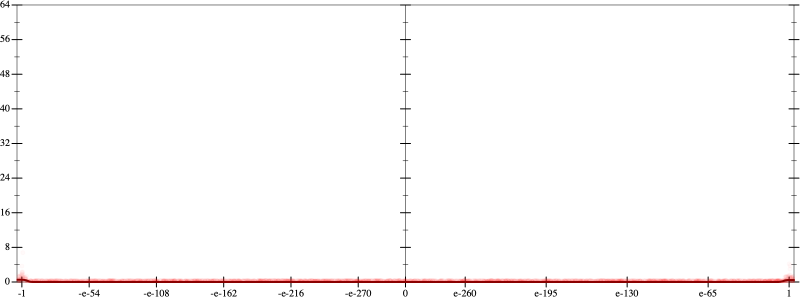
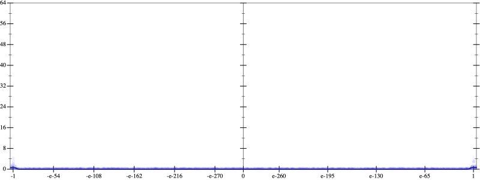
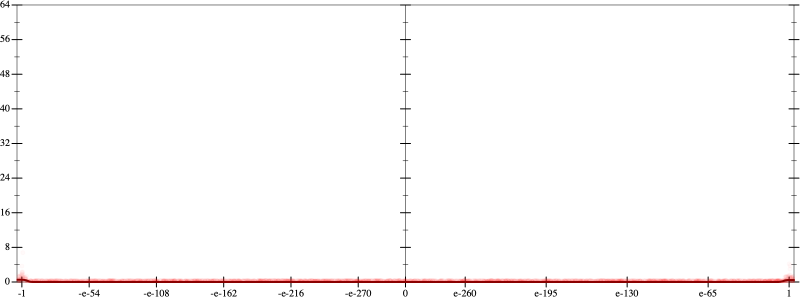
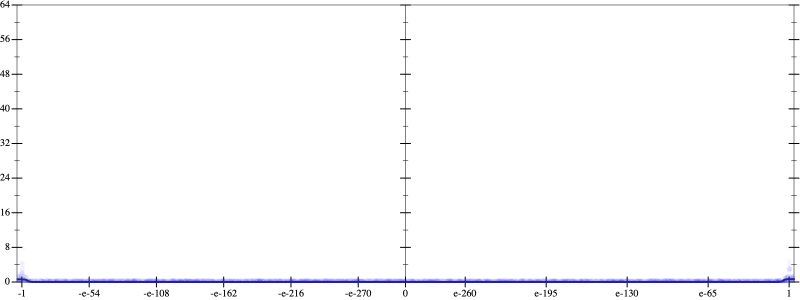
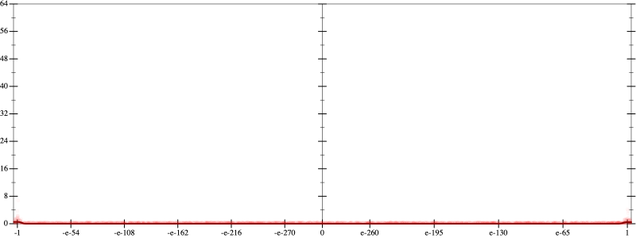
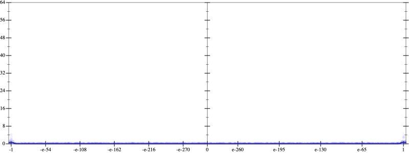

Error
 
Bits error versus x
Bits error versus x
Results
Initial program 0.0
rmApplied add-exp-log0.0
Time bar (total: 35.4s)Debug log
herbie shell --seed 1924282876
(FPCore (x)
:name "6"
:pre (and (>= x -10000.0) (<= x 10000.0))
(+ (+ (+ -120.0 (* 720.0 (* x x))) (* -480.0 (* (* (* x x) x) x))) (* 64.0 (* (* (* (* (* x x) x) x) x) x))))